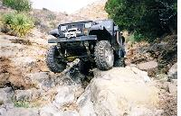
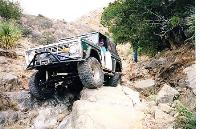

by Terry L. Howe

True to its name, Amatista Ledges begins with a drop off a ledge which leads to drop off after drop off. Picking the wrong line off one of these ledges could easily lead to a roll-over. Between each ledge was a boulder field to keep you on your toes.
 Three quarters of the way through the trail, you hit the "fish bowl." Before you actually get to the fish bowl, you have to get past a large boulder on the left side. You can either place your tire on the boulder or try to sneak around the off camber section on the right. The easiest and safest line is over the rock. It also makes for a good photo op because normally the passenger side front tire will catch lots of air as you can see from this Wrangler.
 If you fall of the rock or try to sneak around it, the result is normally body damage. I tried to sneak around and slipped into the rock causing a fresh dent above my rocker panel guard.
After the rock, you have to straddle the "fish bowl." Due to the incline it is very difficult to see where the large hole is, so a spotter helps a lot. After the fish bowl, there are several other ledges and some optional ledges. I managed to break a shock mount and rip off a brake hose on one of the optional ledges. Crimping off the broken hose with vise grips and topping off the brake fluid helped my stopping power, but of course caused my Jeep to pull strongly to the right. Despite everything, I managed to avoid an accident on the drive back to camp.
{kind=link}
{kind=link}